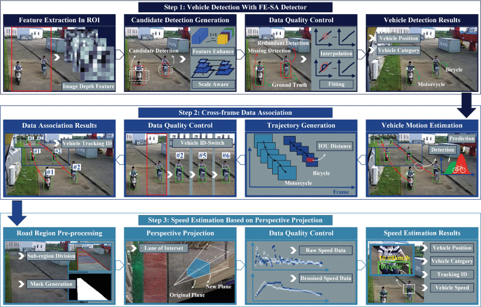
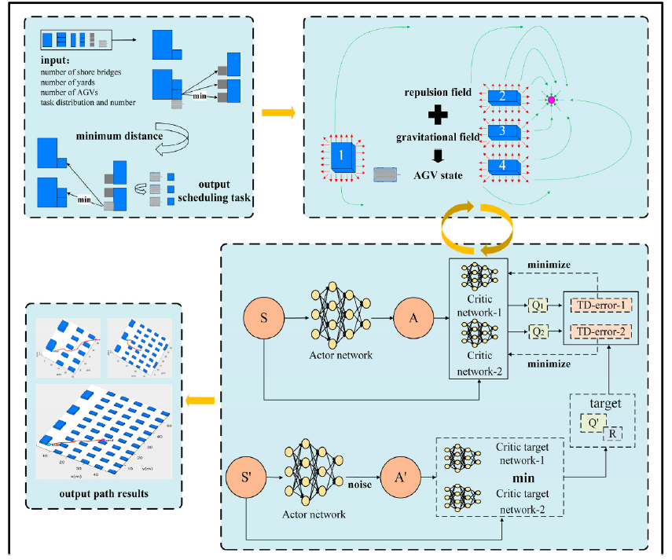
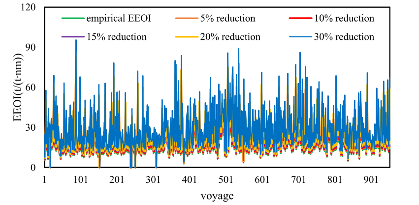

Selected publications(部分发表的论文)
(Video maybe adjusted into different length for different reseach purposes. Please cite our publications if you find the paper or data may benefit your research)
-
Personnel Trajectory Extraction From Port-Like Videos Under Varied Rainy Interferences
Xinqiang Chen, Chenxin Wei, Yang Yang, et al
IEEE Transactions on Intelligent Transportation Systems, 25(7): 6567-6579 (1区top SCI，ESI高被引)
ABSTRACT/Large-scale deployed cameras in the automated container terminal (ACT) area helps on-site staff better identify unexpected yet emergency events by monitoring port personnel trajectories. Rainy weather is a common yet typical problem which may significantly deteriorate trajectory extraction performance. To tackle the problem, the study proposes an ensemble framework to extract personnel trajectory from port-like surveillance videos under varied rainy weather scenarios. Firstly, the proposed framework learns fine-grained personnel features with the help of the object query and transformer encoder-decoder module from the input port-like image sequences, and thus obtains port personnel locations from the input low-visibility images. Secondly, the personnel positions are further associated in a frame-by-frame manner with the help of neighboring kinematic movement information and feature information. Finally, a memory mechanism is introduced in the proposed framework to suppress personnel trajectory discontinuity outlier. In that manner, we can obtain accurate yet consistent personnel trajectories, and each person is assigned with a unique ID. We verified the proposed model performance on three port-like rainy videos involving with interferences of rain, rain streak and fog. Experimental results show that the proposed port personnel trajectory extraction framework can obtain satisfied performance considering that the average multi-target accuracy (MOTA), the average value of judging the same target (IDF1), average recall rate (IDR) and average precision (IDP) were larger than 92%.
-

AI-Empowered Speed Extraction via Port-like Videos for Vehicular Trajectory Analysis
Xinqiang Chen, Zichuang Wang, Qiaozhi Hua, Wen-long Shang, Qiang Luo, Keping Yu, et al
IEEE Transactions on Intelligent Transportation Systems, 24(4): 4541-4552. (1区top SCI, ESI高被引)
ABSTRACT/Automated container terminal (ACT) is considered as port industry development direction, and accurate kinematic data (speed, volume, etc.) is essential for enhancing ACT operation efficiency and safety. Port surveillance videos provide much useful spatial-temporal information with advantages of easy obtainable, large spatial coverage, etc. In that way, it is of great importance to analyze automated guided vehicle (AGV) trajectory movement from port surveillance videos. Motivated by the newly emerging computer vision and artificial intelligence (AI) techniques, we propose an ensemble framework for extracting vehicle speeds from port-like surveillance videos for the purpose of analyzing AGV moving trajectory. Firstly, the framework exploits vehicle position in each image via a feature-enhanced scale-aware descriptor. Secondly, we match vehicle position and trajectory data from the previous step output via Kalman filter and Hungarian algorithm, and thus we obtain the vehicular imaging trajectory in a frame-by-frame manner. Thirdly, we estimate the vehicular moving speed in real-world via the help of perspective projection theory. The experimental results suggest that our proposed framework can obtain accurate vehicle kinematic data under typical port traffic scenarios considering that the average measurement error of root mean square deviation is 0.675 km/h, the mean absolute deviation is 0.542 km/h, and the Pearson correlation coefficient is 0.9349. The research findings suggest that cutting-edge AI and computer vision techniques can accurately extract on-site vehicular trajectory related data from port videos, and thus help port traffic participants make more reasonable management decisions.
-

Autonomous port management based AGV path planning and optimization via an ensemble reinforcement learning framework
Xinqiang Chen, Shuhao Liu, Jiansen Zhao, Huafeng Wu, Jiangfeng Xian, et al
Ocean & Coastal Management, 251(2024):107087(1区SCI, ESI高被引、热点论文).
ABSTRACT/The rapid development of shipping trade pushes automated container terminals toward the direction of intelligence, safety and efficiency. In particular, the formulation of AGV scheduling tasks and the safety and stability of transportation path is an important part of port operation and management, and it is one of the basic tasks to build an intelligent port. Existing research mainly focuses on collaborative operation between port equipment and path optimization under environmental perception, while there is relatively little research on optimization of path smoothness and safety. Therefore, we propose a path optimization model based on the artificial potential field and twin delayed deep deterministic policy gradient (APF-TD3) framework for the port environment. Firstly, we obtain the scheduling task plan of a single AGV by enumeration. Secondly, according to the artificial potential field (APF) algorithm to generate repulsion for obstacles in the harbor and attraction for container storage at the target point with the position information of the AGV as the input data of the reinforcement learning algorithm is inputted into the twin delayed deep deterministic policy gradient algorithm (TD3). Then TD3 selects the optimal action strategy for the AGV according to the input AGV state information and the designed reward mechanism as well as executes the action. Through repeated execution, the optimal action for the next step is selected at each point to generate a path with start and end points. We validate the model by simulating the scale of containerized cargo in the port i.e. small scale, medium scale and large scale scenes. The experimental results show that the method has the shortest path length of 27.519 m, 270.847 m, and 496.389 m compared to artificial potential field and deep deterministic policy gradient (APF-DDPG), APF, and rapidlyexploring random tree (RRT) algorithms, which also have significant advantages in terms of path security and path smoothness. This framework could respond to the scheduling and transportation tasks of single AGV in different environmental layouts and guarantee the smoothness and safety of the path based on the optimization of the path, which promotes the efficient operation and management of ports.
-

Ship energy consumption analysis and carbon emission exploitation via spatial-temporal maritime data
Xinqiang Chen, Siying Lv, Wen-long Shang, Huafeng Wu, Jiangfeng Xian, Chengcheng Song, et al
Applied Energy, 2024, 360: 122886 (1区SCI, ESI高被引、热点论文)
ABSTRACT/Global greenhouse gas emission attracts significant attentions across varied communities, and carbon emission (CE) reduction has become hot topic in the maritime field considering that appropriately 3% CE come from the field. The prerequisite for fulfilling the task is to accurately quantify the ship CE. To achieve the aim, the study utilizes indicators, such as carbon dioxide (CO2) emission, CO2 index, fuel consumption, energy efficiency operational indicator (EEOI), fleet energy efficiency management index (FEEMI), to analyze ship energy con sumption. We employ ship voyage data from container, oil tanker, bulk carrier and liquefied natural gas (LNG) carrier to evaluate ship energy consumption. We have testified EEOI variation tendency under different ship cargo loading volume states (i.e., full/partial load) and speed deceleration scenario. Moreover, the FEEMI in dicator is used to determine energy efficiency for different ship fleets (container ship fleet, oil tanker fleet, bulk carrier fleet, LNG fleet). Experimental results suggest that EEOI is proportional to ship energy consumption when the sailing distance and cargo volume are constant. The ship EEOI indicator calculated in full-loaded status is obviously smaller than the counterpart under partial-load status. The fleet energy consumption efficiency shows a slight increase (at least 1%) due to release of ship energy efficiency management plan. The research findings can help maritime policy-makers provide more reasonable regulations for the purpose of ship energy con sumption enhancement.
-
High-Resolution Vehicle Trajectory Extraction and Denoising From Aerial Videos
Xinqiang Chen, Zhibin Li, Yongsheng Yang, et al
IEEE Transactions on Intelligent Transportation Systems, 22(5): 3190-3202. (1区top，ESI高被引，热点论文，入选2022年交通运输重大科技成果库)
ABSTRACT/In recent years, unmanned aerial vehicle (UAV) has become an increasingly popular tool for traffic monitoring and data collection on highways due to its advantage of low cost, high resolution, good flexibility, and wide spatial coverage. Extracting high-resolution vehicle trajectory data from aerial videos taken by a UAV flying over target highway segment becomes a critical research task for traffic flow modeling and analysis. This study aims at proposing a novel methodological framework for automatic and accurate vehicle trajectory extraction from aerial videos. The method starts by developing an ensemble detector to detect vehicles in the target region. Then, the kernelized correlation filter is applied to track vehicles fast and accurately. After that, a mapping algorithm is proposed to transform vehicle positions from the Cartesian coordinates in image to the Frenet coordinates to extract raw vehicle trajectories along the roadway curves. The data denoising is then performed using a wavelet transform to eliminate the biased vehicle trajectory positions. Our method is tested on two aerial videos taken on different urban expressway segments in both peak and non-peak hours on weekdays. The extracted vehicle trajectories are compared with manual calibrated data to testify the framework performance. The experimental results show that the proposed method successfully extracts vehicle trajectories with a high accuracy: the measurement error of Mean Squared Deviation is 2.301 m, the Root-mean-square deviation is 0.175 m, and the Pearson correlation coefficient is 0.999. The video and trajectory data in this study are publicly accessible for serving as benchmark at https://seutraffic.com.
Recent papers(近五年论文)
- Xinqiang Chen, Zichuang Wang, Qiaozhi Hua, Wenlong Shang, Qiang Luo, Keping Yu (2023). "AI-Empowered Speed Extraction via Port-like Videos for Vehicular Trajectory Analysis" IEEE Transactions on Intelligent Transportation Systems, 24(4): 4541-4552. (1区top SCI, ESI高被引)
- Xinqiang Chen, Chenxin Wei, Yang Yang, Lijuan Luo, Salvatore Antonio Biancardo, Xiaojun Mei (2024). "Personnel trajectory extraction from port-like videos under varied rainy interferences" IEEE Transactions on Intelligent Transportation Systems, 25(7):6567-6579. (1区top SCI, ESI高被引)
- Xinqiang Chen, Siying Lv, Wen-long Shang, Huafeng Wu, Jiangfeng Xian, Chengcheng Song, "Ship energy consumption analysis and carbon emission exploitation via spatial-temporal maritime data" Applied Energy,2024, 360:122886 (1区top SCI, ESI高被引)
- Xinqiang Chen, Shuting Dou, Tianqi Song, Huafeng Wu, Yang Sun*, Jiangfeng Xian, (2024). “Spatial-Temporal Ship Pollution Distribution Exploitation and Harbor Environmental Impact Analysis via Large-Scale AIS Data”. Journal of Marine Science and Engineering, 12(6): 1-17(2区SCI，ESI高被引、热点).
- Guangnian Xiao, Tian Wang, Xinqiang Chen*,Lizhen Zhou."Evaluation of Ship Pollutant Emissions in the Ports of Los Angeles and Lonng Beach" Journal of Marine Science and Engineering,2022,10(9):1206(SCI,热点论文).
- Xinqiang Chen, Zhibin Li, Yongsheng Yang, Lei Qi, Ruimin Ke (2021). "High-Resolution Vehicle Trajectory Extraction and Denoising From Aerial Videos" IEEE Transactions on Intelligent Transportation Systems, 22(5): 3190-3202. (ESI 高被引，热点论文，SCI，入选 2022 年交通运输重大科技成果库).
- Xinqiang Chen, Huixing Chen, Yongsheng Yang, Huafeng Wu, Wenhui Zhang, Jiansen Zhao, Yong Xiong (2021). "Traffic flow prediction by an ensemble framework with data denoising and deep learning model" Physica A: Statistical Mechanics and its Applications, 565(2021), 1-11. (SCI, ESI 高被引)
- Xinqiang Chen, Shuhao Liu, Jiansen Zhao, Huafeng Wu*, Jiangfeng Xian, JakubMontewka. "Autonomous port management based AGV path planning and optimization via an ensemble reinforcement learning framework" Ocean&Coastal Management, 251(2024):1070874.(1区SCI, ESI高被引、热点论文)..
- Xinqiang Chen, Meiling Wang, Jun Ling, Huafeng Wu, Bing Wu, Chaofeng Li. "Ship imaging trajectory extraction via an aggregated you only look once (YOLO)model"Engineering Applications of Artificial Intelligence, 130(2024): 1-9. (1区SCI, 热点论文).
- Xinqiang Chen, Shuhao Liu, Wen Liu, Huafeng Wu*, Bing Han, Jiansen Zhao. (2022)"Quantifying Arctic oil spilling event risk by integrating analytic network process and fuzzy comprehensive evaluation model" Ocean & Coastal Managementt, 228: 106326.(1区SCI, ESI高被引).
- Xinqiang Chen, Hao Wu, Bing Han, Wei Liu, Jakub Montewka, Ryan Wen Liu* (2023). "Orientation-aware ship detection via a rotation feature decoupling supported deep learning approach" Engineering Applications of Artificial Intelligence, 125(2023), 1-16. (SCI)
- Xinqiang Chen, Chenxin Wei, Zhengang Xin, Jiansen Zhao*, Jiangfeng Xian (2023). "Ship Detection under Low-Visibility Weather Interference via an Ensemble Generative Adversarial Network" Journal of Marine Science and Engineering, 1-17. (SCI)
- Xinqiang Chen, Jinbiao Zheng,Chaofeng Li, Bing Wu*, Huafeng Wu, JakubMontewka (2024). "Maritime traffic situation awareness analysis via high-fidelity ship imaging trajectory" Multimedia tools and applications, (2024)83:48907-48923(SCI)
- Xinqiang Chen, Dongfang Ma, Wen Ryan Liu, (2024)."Application of Artificial Intelligence in Maritime Transportation". Journal of Marine Science and Engineering 12(3):439(SCI)
- Xinqiang Chen, Chenxin Wei, Guiliang Zhou, Huafeng Wu, Zhongyu Wang, Salvatore Antonio Biancardo (2022). "Automatic Identification System (AIS) Data Supported Ship Trajectory Prediction and Analysis via a Deep Learning Model" Journal of Marine Science and Engineering, 10(9):1314. (SCI).
- Xinqiang Chen, Huixing Chen, Xianglong Xu, Lijuan Luo, Salvatore Antonio Biancardo (2022). "Ship tracking for maritime traffic management via a data quality control supported framework" Multimedia tools and applications, 81(5):7239-7252. (SCI)
- 陈信强，戴锦宇，韩冰等. "考虑岸桥缓存区和能耗节约的AGV协同调度研究 " 中国航海, 2024, 47(3):72-80.
- 陈信强，王美琳，李朝锋，杨洋，梅骁峻 (2023). "基于深度学习与多级匹配机制的港区人员轨迹提取" 交通运输系统工程与信息, 23(4):70. (EI)
- 陈信强，陈建慧，刘恕浩等. "基于语义分割和霍夫变换的可见光图像海天线检测方法" 中国航海, (CSCD扩展, 已录用).
- 陈信强，戴锦宇，韩冰等. "考虑岸桥缓存区和能耗节约的AGV协同调度研究" 中国航海, (CSCD扩展, 已录用).
- 陈信强， 高原， 赵建森等（2024）."基于Chebnet-LSTM的区域船舶交通流量预测"上海海事大学学报, 45(1):32-38(北大核心).
- 陈信强，史飞翔，王梓创等 (2022). "基于模糊逻辑方法的多船会遇安全态势评估 " 广西大学学报(自然科学版), 47(5): 1327-1336. (北大核心)
- 陈信强，郑金彪，凌峻等 (2022). "基于异步交互聚合网络的港船作业区域人员异常行为识别" 交通信息与安全, 40(2): 22-29. (北大核心，CSCD扩展)
- 陈信强，徐祥龙，彭静等 (2022). "基于Douglas-Peucker和Quick Bundles算法的水上 交通模式识别"上海海事大学学报, 43(03):1-6. (北大核心)
- 陈信强, 凌峻, 齐雷等(2021). "多特征融合和尺度变化估计的船舶跟踪方法" 计算机工程与应用, 57(13), 246-250. (北大核心，CSCD扩展)